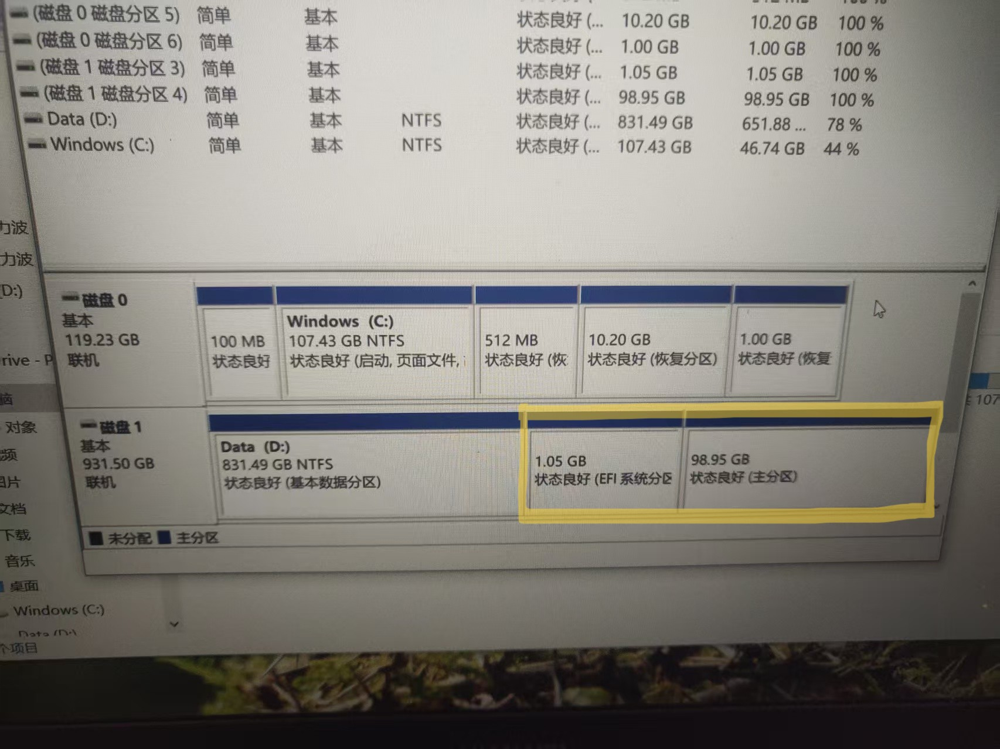
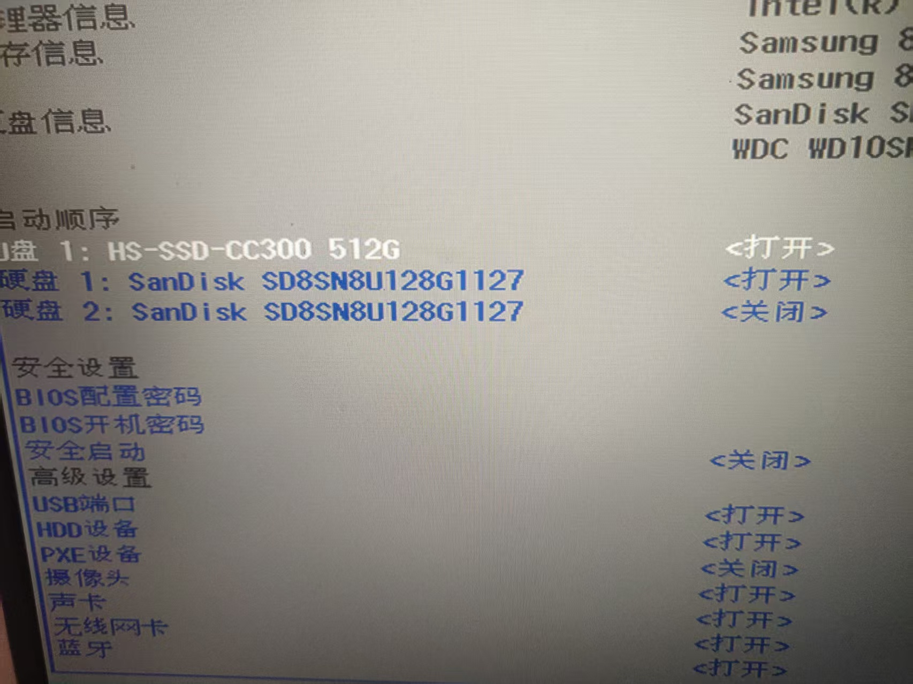
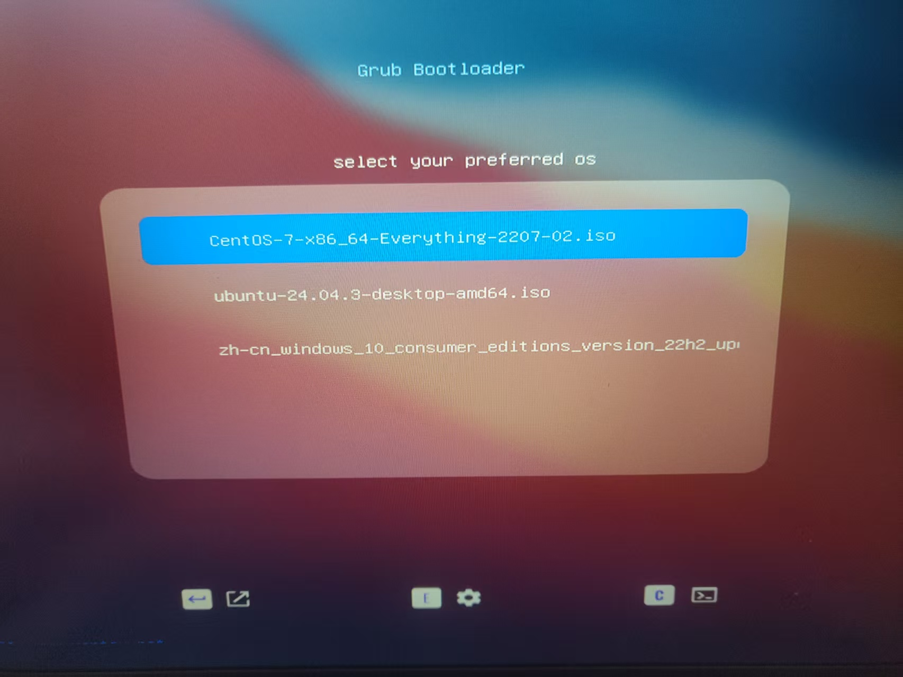
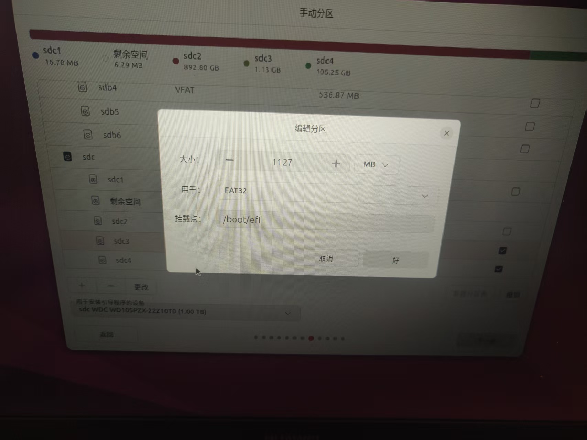
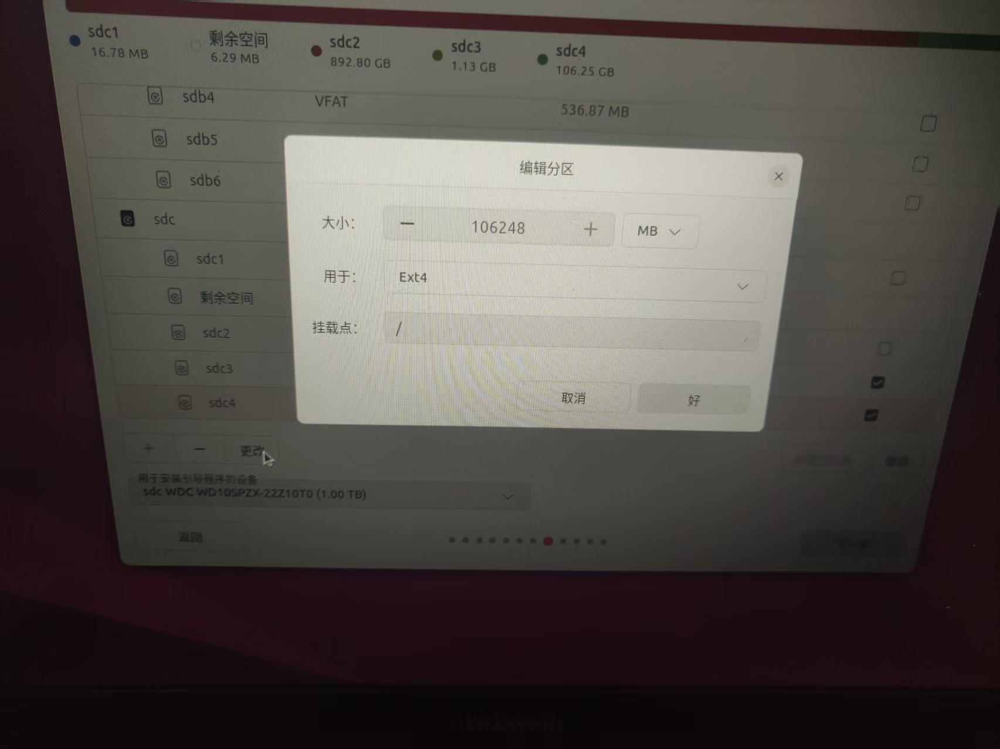
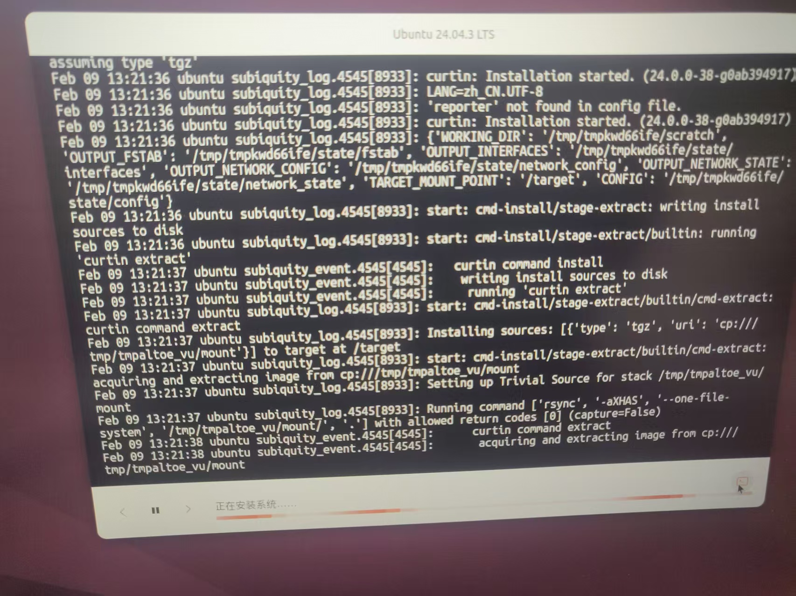
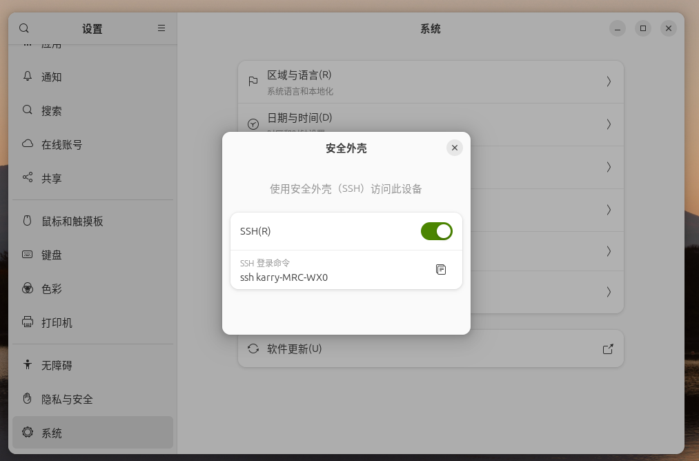
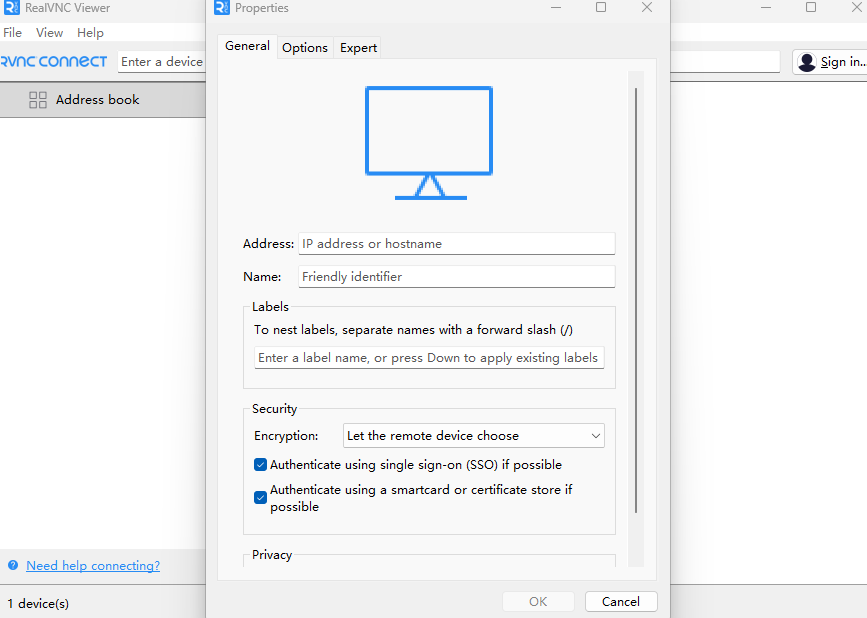

# 前言
我有一台华为的笔记本电脑，我希望将其由原来的 Windows 系统扩展为 Windows 与 Ubuntu 双系统，这么做的核心目的在于我想测试一下分布式相关的内容。然而我的 C 盘已经不足 50G，不过我还有一块一 TB 的机械硬盘，这款机器硬盘还剩 600G，并且它的速度也不是很慢，足以运行 Linux 的发行版。其实我想以更为原生的方式来部署 docker，这样方便测试。如果你问我为什么不使用 VM Ware，我就想折腾一下哈哈哈。
# 创建 Ubuntu 的引导盘
我个人比较喜欢使用 Ventoy 来制作引导盘，鉴于我已经有一个引导盘了这里就不再进行详细展开，具体如何创建 Ventoy 引导盘可以查看其官网：https://www.ventoy.net/cn/index.html
# 下载 Ubuntu24.04 镜像
Ubuntu24.04 镜像文件可以从其官网下载，https://cn.ubuntu.com/download
截止 26 年 2 月 Ubuntu 镜像文件版本为 24.04.03，Ubuntu 24.04.03 LTS 专为桌面 PC 和笔记本精心打造的 Ubuntu 长期支持版本。24.04 LTS 将提供五年常规安全更新和维护。
下载或者镜像需要放在引导盘中。
# 调整分区
安装系统前的首要任务是调整分区，当然系统已经安装好了 Windows，我们可以直接进入系统进行调整分区，找到那块机械硬盘将他压缩卷，压缩出 100GB 的空间，下图是已经安装好系统之后的样子，在安装好之后这 100GB 首先会分出大约 1GB 的 EFI 系统引导，其次是将近 99G 的主分区。
# 进入 BIOS 调整引导顺序
接下来重启电脑注意这时候不要直接进入，系统根据你电脑的主板型号按下相应的进入 BIOS 按键，一般为长按或者快速连接，华为 MateBook D 的按键为 F2。
将这个 512G 的移动硬盘调整为第一启动顺序。
# 选择 Ubuntu 启动
# 设置挂载点
最关键的就是这里，其余的减值设置都可以跳过直接下一步就可以，如果有需要可以根据自己的实际情况设置。首先是找到我们的刚刚划分出来的 100G 空间，我们首先先选择用于安装引导程序的设备，因为我们需要做制作的是一个双引导独立的双系统，所以我们把引导设备也放在 100G 空间之中。
如上图所示挂在点为 /boot/efi 。
接着选择剩下的 99G 作为主分区：
挂载点为 \ 。
接下来设置账户就不过多赘述了。
# 安装中文输入法
安装输入法首先需要安装输入法框架，我推荐 ibus。
打开终端输入：
sudo apt install ibus |
切换命令框架：
im-config -s ibus |
GNOME 桌面支持包：
sudo apt install ibus-gtk ibus-gtk3 |
安装简体中文输入法：
sudo apt install ibus-pinyin |
# SSH 远程连接
设置 - 系统 - SSH
# VNC-Xorg
loginctl show-session c2 -p Type |
Type=x11，必须是 x11 ，否则 VNC 接管不了默认桌面。
# 安装 VNC 服务端
sudo apt update | |
sudo apt install x11vnc -y |
# 设置 VNC 连接密码
x11vnc -storepasswd |
# 控制开机那个桌面
x11vnc -display :0 -auth guess -forever -shared -usepw -bg |
# 端口确认
一般为 5900.
ss -lntp | grep x11vnc |
# 使用 VNC 客户端
下载：https://www.realvnc.com/en/
输入 IP 加端口号，输入 Name，然后发起连接就行了。